SVM
很多摘自 https://tangshusen.me/2018/10/27/SVM/
后期整合其他博客与学校课程PPT
SVM是什么
支持向量机（英语：support vector machine，常简称为SVM，又名支持向量网络）是在分类与回归分析中分析数据的监督式学习模型与相关的学习算法。给定一组训练实例，每个训练实例被标记为属于两日函数求导并令导数个类别中的一个或另一个，SVM训练算法创建一个将新的实例分配给两个类别之一的模型，使其成为非概率二元线性分类器。SVM模型是将实例表示为空间中的点，这样映射就使得单独类别的实例被尽可能宽的明显的间隔分开。然后，将新的实例映射到同一空间，并基于它们落在间隔的哪一侧来预测所属类别。
简单点讲，SVM就是一种二类分类模型，他的基本模型是的定义在特征空间上的间隔最大的线性分类器，SVM的学习策略就是间隔最大化。
直观理解
我们先来看看下面这个图

图中有分别属于两类的一些二维数据点和三条直线。如果三条直线分别代表三个分类器的话，请问哪一个分类器比较好？
我们凭直观感受应该觉得答案是H3。首先H1不能把类别分开，这个分类器肯定是不行的；H2可以，但分割线与最近的数据点只有很小的间隔，如果测试数据有一些噪声的话可能就会被H2错误分类(即对噪声敏感、泛化能力弱)。H3以较大间隔将它们分开，这样就能容忍测试数据的一些噪声而正确分类，是一个泛化能力不错的分类器。
对于支持向量机来说，数据点若是 p 维向量，我们用 p−1 维的超平面来分开这些点。但是可能有许多超平面可以把数据分类。最佳超平面的一个合理选择就是以最大间隔把两个类分开的超平面。因此，SVM选择能够使离超平面最近的数据点的到超平面距离最大的超平面。
以上介绍的SVM只能解决线性可分的问题，为了解决更加复杂的问题，支持向量机学习方法有一些由简至繁的模型:
线性可分SVM
当训练数据线性可分时，通过硬间隔(hard margin，什么是硬、软间隔下面会讲)最大化可以学习得到一个线性分类器，即硬间隔SVM，如上图的的H3。
线性SVM
当训练数据不能线性可分但是可以近似线性可分时，通过软间隔(soft margin)最大化也可以学习到一个线性分类器，即软间隔SVM。
非线性SVM
当训练数据线性不可分时，通过使用核技巧(kernel trick)和软间隔最大化，可以学习到一个非线性SVM。
线性可分SVM——硬间隔
考虑如下形式的线性可分的训练数据集
(X1,y1),(X2,y2),…,(Xn,yn)
其中Xi 是一个含有 d 个元素的列向量， 即 Xi∈Rd， yi 是标量， y∈+1,−1，yi=+1 时表示 Xi 属于正类别，yi=−1 时表示 Xi 属于负类别。
注: 本文中, X、Xi、W等都是(列)向量，有的文章一般用 xi 表示一个向量而用 X 表示所有 xi 组成的一个矩阵，注意区分。
回忆一下感知机的目标：找到一个超平面使其能正确地将每个样本正确分类。感知机使用误分类最小的方法求得超平面，不过此时解有无穷多个。而线性可分支持向量机利用间隔最大化求最优分离超平面，这时解是唯一的。
超平面与间隔
将超平面沿法方向（对于上面的直线来说是法方向，但是分类平面未必有法方向，如曲面，暂时不讨论）移动，直到遇到支持常量为止，此时涵盖的法方向的距离差就是间隔。或者说最大化两类支持向量到超平面的距离之和
一个超平面由法向量 w 和截距 b 决定, 其方程为 w⋅x+b=0, 可以规定法向量指向的一侧为正类, 另一侧为负类。下图画出了三个平行的超平面，法方向取左上方向。
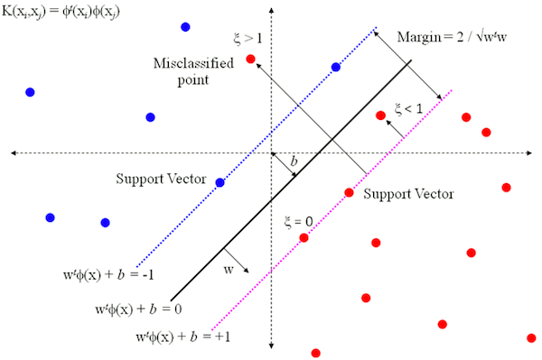图中的 ϕ(x) 是使用了核函数进行映射，这里先不讨论。w 是线性模型的权重向量（又叫投影向量），也是划分超平面的法向量，决定着超平面的方向。偏置项 b 又被称为 位移项，决定了超平面和空间原点之间的距离。
假设超平面能够将所有训练样本正确分类，也即对于所有标记为+1的点有 w⋅x+b>0，所有标记为-1的点有 w⋅x+b<0。只要这个超平面存在，那么我们必然可以对 w 和 b 进行适当的线性放缩，使得：
w⋅x+b≥+1,yi=+1w⋅x+b≤−1,yi=−1
而SVM中定义使得上式等号成立的训练样本点就是支持向量（support vector）（如果叫作支持点可能更好理解一些，因为事实上就是样本空间中的数据点，但因为我们在表示数据点的时候一般写成向量形式，所以就称为支持向量），它们是距离超平面最近的几个样本点，也即上面图中两条虚线上的点（图中存在比支持向量距离超平面更近的点，这跟软间隔有关，这里先不讨论）。
在SVM中，我们希望实现的是最大化两类支持向量到超平面的距离之和，那首先就得知道怎么计算距离。怎样计算样本空间中任意数据点到划分超平面的距离呢？
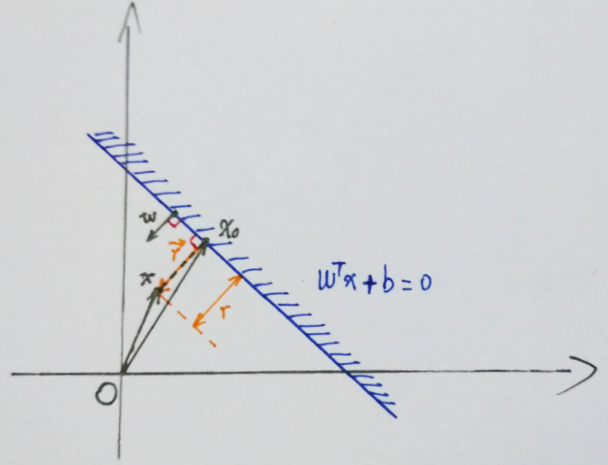图中蓝色线即超平面，对应直线方程 wTx+b=0。投影向量 w 垂直于超平面，点 x 对应向量 x，过点 x 作超平面的垂线，交点 x0 对应向量 x0。假设由点 x0 指向 点 x 的向量为 r，长度（也即点 x 与超平面的距离）为 r。有两种方法计算可以计算出 r 的大小：
方法1：向量计算
由向量加法定义可得 x=x0+r。
那么向量 r 等于什么呢？它等于这个方向的单位向量乘上 r，也即有 r=∥w∥w⋅r
因此又有 x=x0+∥w∥w⋅r。
由于点 x0 在超平面上，所以有 wTx0+b=0
由 x=x0+∥w∥w⋅r 可得 x0=x−∥w∥w⋅r，代入直线方程消去 x0：
wTx0+b=wT(x−∥w∥w⋅r)+b=0
简单变换即可得到:
r=∥w∥wTx+b
又因为我们取距离为正值，所以要加上绝对值符号：
r=∥w∥∣wTx+b∣
方法2：点到直线距离公式
假设直线方程为 ax1+bx2+c=0，那么有点到直线距离公式：
r=a2+b2∣ax+bx2+c∣
令 w=(a,b) ，x=(x1,x2)，则可以把 ax1+bx2 写成向量形式 wTx 。把截距项设为 b，则直线方程变为 wTx+b=0 ，代入距离公式可得：
r=wTw∣wTx+b∣=∥w∥∣wTx+b∣(1)
该式扩展到多维情况下也是通用的。
间隔最大化
前面已经提到，我们希望实现的是最大化两类支持向量到超平面的距离之和，而根据定义，所有支持向量都满足：
w⋅x+b=+1,yi=+1w⋅x+b=−1,yi=−1
代入前面的距离公式 (1) 可以得到支持向量到超平面的距离为 ∥w∥1。
定义间隔（margin）为两个异类支持向量到超平面的距离之和：
有的版本间隔用 γ 表示，有的用 ρ ，推荐前者，不过这里暂时用后者
又: 这里 X 与 x ， W 与 w 指代的是一样的，不做区分
同时 X⋅W=XT⋅W=w⋅x=wT⋅x，不再赘述
将高数里面求两条平行直线的距离公式推广到高维可求得图 2.1 中 margin 的 ρ :
margin=ρ=∣∣W∣∣2(2.2.1)
我们的目标是使 ρ 最大, 等价于使 ρ2 最大，也即使得 ∣∣W∣∣2 尽可能小：
W,bmaxρ⟺W,bmaxρ2⟺W,bmin21∣∣W∣∣2(2.2.2)
上式的 21 是为了后续求导后刚好能消去，没有其他特殊意义。同时也不要忘了有一些约束条件:
XiTW+b≥+1,yi=+1XiTW+b≤−1,yi=−1(2.2.3)
约束条件也即：
yi(WTX+b)≥1,i=1,2,...,m
约束部分指的是全部样本都被正确分类，此时标记值（+1 或 −1）乘上预测值（≥+1 或 ≤−1）必定是一个 ≥1 的数值。
看上去间隔大小只与 w 有关，但实际上位移项 b 也通过约束影响着 w 的取值，进而对间隔产生影响。
总结一下，间隔最大化问题的数学表达就是
W,bminJ(W)=W,bmin21∣∣W∣∣2s.t.yi(XiTW+b)≥1,i=1,2,…n.(2.2.4)
通过求解上式即可得到最优超平面 W^ 和 b^ 。
特别地，还有以下定义：
函数间隔：yi(wTx+b)
几何间隔：∥w∥2yi(wTx+b)
支持向量
在线性可分的情况下，训练数据集的样本点中与分离超平面距离最近的数据点称为支持向量(support vector)，支持向量是使(2.2.4)中的约束条件取等的点，即满足
yi(XiTW+b)=1(2.3.1)
的点。也即所有在直线 XTW+b=1 或直线 XTW+b=−1 的点。如下图所示:
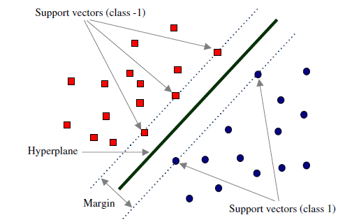在决定最佳超平面时只有支持向量起作用，而其他数据点并不起作用。如果移动非支持向量，甚至删除非支持向量都不会对最优超平面产生任何影响。也即支持向量对模型起着决定性的作用，这也是 “支持向量机” 名称的由来。
对偶问题
如何求解式 (2.2.4) 呢？我们称式 (2.2.4) 所述问题为原始问题 (primal problem), 可以应用拉格朗日乘子法构造拉格朗日函数(Lagrange function) 再通过求解其对偶问题 (dual problem) 得到原始问题的最优解。转换为对偶问题来求解的原因是:
- 对偶问题更易求解，由下文知对偶问题只需优化一个变量 α 且约束条件更简单；
- 能更加自然地引入核函数，进而推广到非线性问题。
首先构建拉格朗日函数。为此需要引进拉格朗日乘子 (Lagrange multiplier) αi≥0,i=1,2,…n。则拉格朗日函数为:
L(W,b,α)=21∣∣W∣∣2−i=1∑nαi[yi(XiTW+b)−1](2.4.1)
因此，给定一个 W 和 b , 若不满足式(2.2.4)的约束条件，那么有
αmaxL(W,b,α)=+∞(2.4.2)
否则，若满足式(2.2.4)的约束条件，有
αmaxL(W,b,α)=J(W)=21∣∣W∣∣2(2.4.3)
结合式(2.4.2)和(2.4.3)知，优化问题
W,bminαmaxL(W,b,α)(2.4.4)
与式(2.2.4)所述问题是完全等价的。
根据拉格朗日对偶性，式 (2.4.4)所述问题即原始问题的对偶问题是:
αmaxW,bminL(W,b,α)(2.4.5)
以上具体推导细节可参见书籍《统计学习方法》或者知乎文章拉格朗日对偶性
为了求得对偶问题的解，需要先求得 L(W,b,α) 对 W和 b的极小再求对α的极大。
(1) 求 W,bminL(W,b,α):
对拉格朗日函数求导并令导数为 0，即偏微分
∇WL(W,b,α)=∂W∂L
有：
∇WL(W,b,α)=W−i=1∑nαiyiXi=0⟹W=i=1∑nαiyiXi(2.4.6)
∇bL(W,b,α)=−i=1∑nαiyi=0⟹i=1∑nαiyi=0(2.4.7)
将上面两式代入 L(W,b,α)
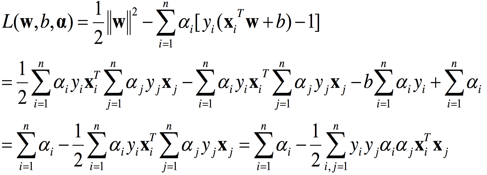所以，
W,bminL(W,b,α)=−21i=1∑nj=1∑nαiαjyiyjXiTXj + i=1∑nαi(2.4.8)
(2) 求 W,bminL(W,b,α) 对 α 的极大:
等价于式 (2.4.8)对α求极大，也等价于式 (2.4.8)取负数后对α求极小，即：
αmin21i=1∑nj=1∑nαiαjyiyjXiTXj − i=1∑nαi(2.4.9)
同时满足约束条件:
i=1∑nαiyi=0αi≥0,i=1,2,…,n.(2.4.10)
至此，我们得到了原始最优化问题 (2.2.4)和对偶最优化问题 (2.4.9)、(2.4.10)。
其实 (2.4.9) 的一种等价表述如下：
amaxi=1∑mai−21i=1∑mj=1∑maiajyiyjxiTxjs.t.i=1∑maiyi=0,ai≥0,i=1,2,...,m(5)
由 slater 条件知，因为原始优化问题的目标函数和不等式约束条件都是凸函数，并且该不等式约束是严格可行的 (因为数据是线性可分的), 所以存在 W^ , b^ ,α^ ，使得 W^ , b^是原始问题的解，α^ 是对偶问题的解。这意味着求解原始最优化问题 (2.2.4)可以转换为求解对偶最优化问题 (2.4.9)、(2.4.10)。
slater 条件:
原始问题一般性表达为
xminf(x)s.t. ci(x)≤0,i=1,2,…khj(x)=0,j=1,2,…,l
则其拉格朗日函数为
L(x,α,β)=f(x)+i=1∑kαici(x)+j=1∑lβjhj(x),αi≥0
假设原始问题目标函数 f(x) 和不等式约束条件 ci(x)都是凸函数，原始问题等式约束 hj(x)都是仿射函数，且不等式约束 ci(x)是严格可行的，即存在 x ，对所有 i 都有 ci(x)<0 ，则存在 x^ , α^ , β^ ，使 x^ 是原始问题的解， α^ , β^ 是对偶问题的解。
那么如何求解优化问题 (2.4.9)、(2.4.10)的最优解 α^ 呢？
不难发现这是一个二次规划问题，有现成的通用的算法来求解。
事实上通用的求解二次规划问题的算法的复杂度正比于训练数据样本数，所以在实际应用中需要寻求更加高效的算法，例如序列最小优化 (Sequential Minimal Optimiation, SMO) 算法。
假设我们现在求得了 (2.4.9)、(2.4.10)的最优解 α^，则根据式 (2.4.6)可求得最优 W^：
W^=i=1∑nα^iyiXi(2.4.11)
因为至少存在一个 α^j>0 (若不存在，即 α^ 全为 0，则 W^=0 ， 即 margin=∣∣W^∣∣2=∞ , 显然不行), 再根据 KKT 条件，即
⎩⎨⎧乘子非负:αi≥0(i=1,2,…n.下同)约束条件:yi(XiTW+b)−1≥0互补条件:αi(yi(XiTW+b)−1)=0
这个KKT条件说明了，对任何一个样本 Xi 来说，
- 要么对应的拉格朗日乘子 ai 为0，此时样本 Xi 对式（6）毫无贡献，不会影响到模型；
- 要么函数间隔 yif(Xi)=1，此时样本 Xi 位于最大间隔边界上，是一个支持向量。
它揭示了SVM的一个重要性质：最终模型只与支持向量有关，因此训练完成后，大部分的训练样本都不需保留。
所以至少存在一个j， 使 yj(XjTW^+b^)−1=0，即可求得最优 b^：
b^=yj1−XjTW^=yj−XjTW^=yj−i=1∑nα^iyiXjTXi(2.4.12)
至此，所以我们就求得了整个线性可分 SVM 的解。求得的分离超平面为：
i=1∑nα^iyiXTXi+b^=0(2.4.13)
则分类的决策函数为
f(X)=sign(i=1∑nα^iyiXTXi+b^)(2.4.14)
其中 sign(x)是经典的正值归1，负值归-1，0不变的符号函数
再来分析 KKT 条件里的互补条件，对于任意样本 (Xi,yi)，总会有 αi=0 或者 yif(Xi)=yi(XiTW^+b)=1。则有
- 若 αi=0，此样本点不是支持向量，对模型没有任何作用；
- 若 αi>0，此样本点位于最大间隔边界上，是一个支持向量，如下图所示。
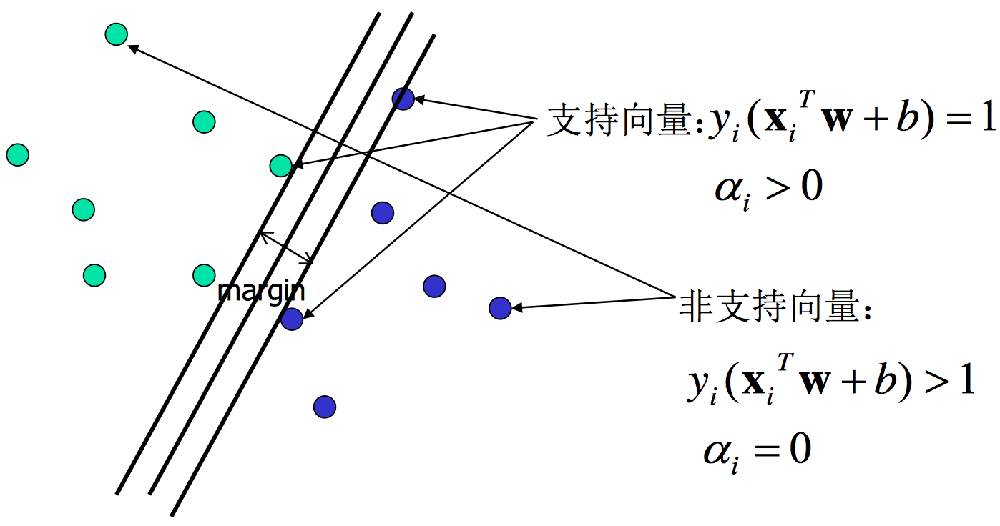此外，当样本点是非支持向量时，因为 αi=0, 所以 SVM 的解中的求和项中第 i 项就为 0，所以 SVM 的解 (2.4.11)、(2.4.12)可简化为如下形式:
W^=i∈SV∑α^iyiXi(2.4.15)
b^=yj−i∈SV∑α^iyiXjTXi(2.4.16)
类似的，判别函数也可转换成如下形式：
f(X)=sign(i∈SV∑α^iyiXTXi+b^)(2.4.17)
所以，整个 SVM 的解只与支持向量 SV 有关，与非支持向量无关。这也就解释了前面的结论，即在决定最佳超平面时只有支持向量起作用，而其他数据点并不起作用。
SMO算法
上面提到对偶问题式是一个二次规划问题，可以使用通用的二次规划算法求解。但问题规模正比于样本数，因此开销相当大。为了避免这个开销，可以使用高效的SMO（Sequential Minimal Optimization）算法。
初始化参数 α 后，SMO算法重复下面两个步骤直至收敛：
- 选取一对需要更新的变量 ai 和 aj
- 固定 ai 和 aj 以外的参数，求解对偶问题式 (2.4.9) 来更新 ai 和 aj
怎么选取 ai 和 aj 呢？
注意到，只要选取的 ai 和 aj 中有一个不满足KKT条件，那么更新后目标函数的值就会增大。而且违背KKT条件的程度越大，则更新后导致目标函数增幅就越大。
因此，SMO算法先选取一个违背KKT条件程度最大的变量 ai，然后再选一个使目标函数增长最快的变量 aj，但由于找出 aj 的开销较大，所以SMO算法采用了一个启发式，使选取的两变量对应的样本之间间隔最大。这样两个变量差别很大，与选取两个相似变量相比，这种方法能为目标函数带来更大的变化，从而更快搜索到全局最大值。
由于SMO算法在每次迭代中，仅优化两个选定的参数，其他参数是固定的，所以会非常高效。此时，可将对偶问题式 (2.4.9) 的约束重写为：
aiyi+ajyj=c,ai≥0,aj≥0(7)
其中，c=−∑k=i,jakyk 看作是固定的常数。
利用式（7），我们可以把 aj 从式 (2.4.9) 中消去，这样就得到了一个单变量二次规划问题，只需考虑 ai≥0 这个约束。这样的问题具有闭式解，所以我们连数值优化方法都不需要了，可以直接算出 ai 和 aj。
而：
w=i=1∑maiyixi(3)
所以使用SMO算法计算出最优解之后，我们关注的是如何推出 w 和 b，从而得到最终模型。获得 w 很简单，直接用式（3）就可以了。而位移项 b 则可以通过支持向量导出，因为对于任一支持向量 (xs,ys)，都有函数间隔等于1，所以有：
ysf(x)=ys(i∈S∑aiyixiTxs+b)=1(8)
这里的 S 是所有支持向量的下标集（事实上，用所有样本的下标也行，不过非支持向量的拉格朗日乘子等于0，对求和没贡献，这一点前面已经提到了）。
理论上，我们只要选取任意一个支持向量代入式（8）就可以把 b 算出来了。但实际任务中往往采用一种更鲁棒的做法：用所有支持向量求解的平均值。
b=∣S∣1s∈S∑(ys1−i∈S∑aiyixiTxs)
线性SVM——软间隔
在前面的讨论中，我们一直假定训练数据是严格线性可分的，即存在一个超平面能完全将两类数据分开。但是现实任务这个假设往往不成立，例如下图所示的数据。
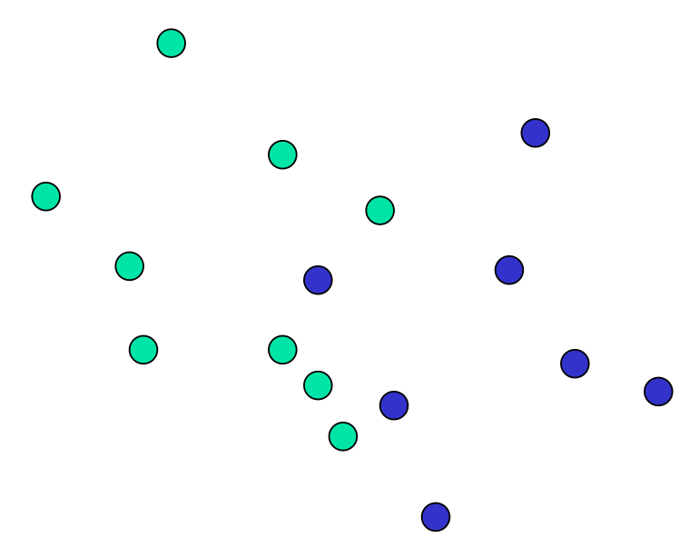软间隔最大化
解决该问题的一个办法是允许 SVM 在少量样本上出错，即将之前的硬间隔最大化条件放宽一点，为此引入 “软间隔(soft margin)” 的概念。即允许少量样本不满足约束
yi(XiTW+b)≥1(3.1.1)
为了使不满足上述条件的样本点尽可能少，我们需要在优化的目标函数(2.2.2)里面新增一个对这些点的惩罚项。最常用的是 hinge 损失：
lhinge(z)=max(0,1−z)(3.1.2)
即若样本点满足约束条件损失就是 0, 否则损失就是 1−z , 则优化目标 (2.2.2) 变成
W,bmin21∣∣W∣∣2+Ci=1∑nmax(0,1−yi(XiTW+b))(3.1.3)
其中C>0称为惩罚参数，C越小时对误分类惩罚越小，越大时对误分类惩罚越大，当C取正无穷时就变成了硬间隔优化。实际应用时我们要合理选取C，C越小越容易欠拟合，C越大越容易过拟合。
瓜书：
w,bmin21∥w∥2+Ci=1∑mℓ0/1(yi(wTx+b)−1)(12)
式（12）其实就是（3.1.3）
其中 ℓ0/1 是0/1损失函数：
ℓ0/1(z)={1,if z<00,otherwise
它的含义很简单：如果分类正确，那么函数间隔必定大于等于1，此时损失为0；如果分类错误，那么函数间隔必定小于等于-1，此时损失为1。
由于0/1损失函数是一个非凸不连续函数，所以式（12）难以求解，于是在实际任务中，我们采用一些凸的连续函数来取替它，这样的函数就称为替代损失（surrogate loss）函数。
又：由于01函数不连续，所以会在间断处存在一些问题（过于简单粗暴的分类）
最常用的有以下三种：
- hinge损失：ℓhinge(z)=max(0,1−z)
- 指数损失（exponential loss）：ℓexp(z)=exp(−z)
- 对率损失（logistic loss）：ℓlog(z)=log(1+exp(−z))
不妨作图观察比较一下这些损失函数（code文件夹下有实现代码）：
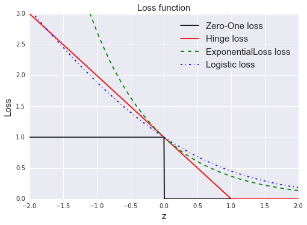这里有个问题是，书中提到对率损失中 log 指 ln，也即底数为自然对数，但这种情况下对率损失在 z=0 处不为1，而是0.693。但是书中的插图里，对率损失经过 (0,1) 点，此时底数应为2，上面的插图就是按底数为2计算的。
实际任务中最常用的是hinge损失，这里就以hinge损失为例，替代0/1损失函数
如果我们引入 “松弛变量” ξi≥0, 那么式 (3.1.3) 可重写成
W,b,ξmin21∣∣W∣∣2+Ci=1∑nξis.t. yi(XiTW+b)≥1−ξiξi≥0,i=1,2,…n.(3.1.4)
上式所述问题即软间隔支持向量机。
对偶问题
式 (3.1.4) 表示的软间隔支持向量机依然是一个凸二次规划问题，和硬间隔支持向量机类似，我们可以通过拉格朗日乘子法将其转换为对偶问题进行求解。
式 (3.1.4) 对应的拉格朗日函数为
L(W,b,ξ,α,β)=21∣∣W∣∣2+Ci=1∑nξi−i=1∑nαi[yi(XiTW+b)−1+ξi]−i=1∑nβiξi(3.2.1)
类似 2.4 节，为了求得对偶问题的解，我们需要先求得L(W,b,ξ,α,β) 对 W、b 和 ξ 的极小再求对 α 和 β 的极大。
以下两步和 2.4 节几乎完全一样，除了最后对 α 的约束条件略有不同。
(1) 求 W,b,ξminL(W,b,ξ,α,β):
将 L(W,b,ξ,α,β) 分别对 W、b 和 ξ 求偏导并令为 0 可得
W=i=1∑nαiyiXi(3.2.2)
i=1∑nαiyi=0(3.2.3)
C=αi+βi(3.2.4)
将上面三个式子代入式 (3.2.1) 并进行类似式 (2.4.8) 的推导即得
W,b,ξminL(W,b,ξ,α,β)=−21i=1∑nj=1∑nαiαjyiyjXiTXj + i=1∑nαi(3.2.5)
注意其中的 β 被消去了。
（2.4.8）如下
W,bminL(W,b,α)=−21i=1∑nj=1∑nαiαjyiyjXiTXj + i=1∑nαi(2.4.8)
(2) 求 W,b,ξminL(W,b,ξ,α,β) 对 α 的极大：
式 (3.2.5)对α求极大，也等价于式 (3.2.5)取负数后对α求极小，即
αmin21i=1∑nj=1∑nαiαjyiyjXiTXj − i=1∑nαi(3.2.6)
同时满足约束条件:
i=1∑nαiyi=00≤αi≤C,i=1,2,…,n.(3.2.7)
至此，我们得到了原始最优化问题 (3.1.4)和对偶最优化问题 (3.2.6)、(3.2.7)。
类似 2.4 节地，假设我们现在通过通用的二次规划求解方法或者 SMO 算法求得了 (3.2.6)、(3.2.7)的最优解 α^，则根据式 (3.2.2)可求得最优 W^：
W^=i=1∑nα^iyiXi(3.2.8)
再根据 KKT 条件，即
⎩⎨⎧乘子非负:αi≥0,βi≥0(i=1,2,…n.下同)约束条件:yi(XiTW+b)−1≥ξi互补条件:αi[yi(XiTW+b)−1+ξi]=0,βiξi=0
瓜书：
其中 βi=μi
⎩⎨⎧ ai≥0;μi≥0;yif(xi)−1+ξi≥0;ai(yif(xi)−1+ξi)=0;ξi≥0;μiξi=0.
KKT条件可以理解为下面几点：
对任意训练样本，
要么对应的拉格朗日乘子 ai=0；
要么函数间隔等于1和对应的松弛变量之差（yi(wTx+b)=1−ξi）。
如果一个样本的拉格朗日乘子 ai=0，则它对模型没有任何影响，不需要保留。
如果一个样本的拉格朗日乘子大于0，则它是支持向量。
- 如果拉格朗日乘子 ai 小于 C，按照式（3.2.4）有 μi>0，因此松弛变量 ξi=0(μiξi=0)，此时函数间隔为1，样本落在最大间隔边界上。
如果拉格朗日乘子 ai 等于 C，按照式（3.2.4）有 μi=0，因此松弛变量 ξi>0。
- 若 ξi<1，则样本落在间隔内，但依然被正确分类。
- 若 ξi>1，则样本落在另一个类的间隔外，被错误分类
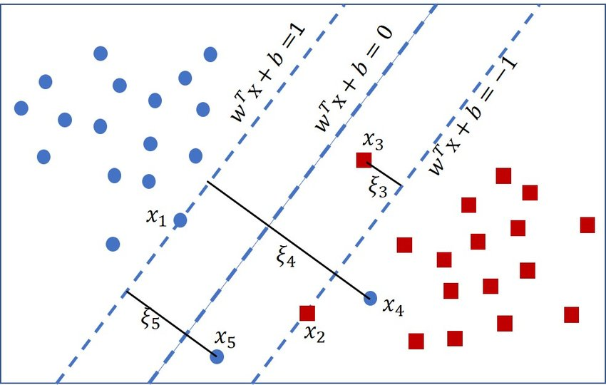上图就展示了一个典型的软间隔支持向量机。图中就有一些异常点，这些点有的虽然在虚线与超平>面之间（0<yi(wTx+b)<1），但也能被正确分类（比如 >x3）。有的点落到了超平面的另一侧，就会被误分类（比如 x4 h和 >x5）。
特别地，在 R. Collobert. 的论文 Large Scale Machine Learning 中提到，常数 C 一般取训练集大小的倒数（C=m1）。
可求得整个软间隔 SVM 的解，即：
W^=i∈SV∑α^iyiXi(3.2.9)
b^=yj−i∈SV∑α^iyiXjTXi(3.2.10)
其中 j 需满足 0<α^j<C
对于任意样本 (Xi,yi) ，
- 若 αi=0，此样本点不是支持向量，该样本对模型没有任何的作用；
- 若 αi>0，此样本是一个支持向量。
若满足 αi>0 ，进一步地，
- 若 0<αi<C, 由式 (3.2.4) 得 βi=0，即刚好 yi(XiTW+b)=1，样本恰好在最大间隔边界上；
- 若 αi=C，有βi>0，此时若 βi<1则该样本落在最大间隔内部，若 βi>1 则该样本落在最大间隔内部即被错误分类。
如下图所示。
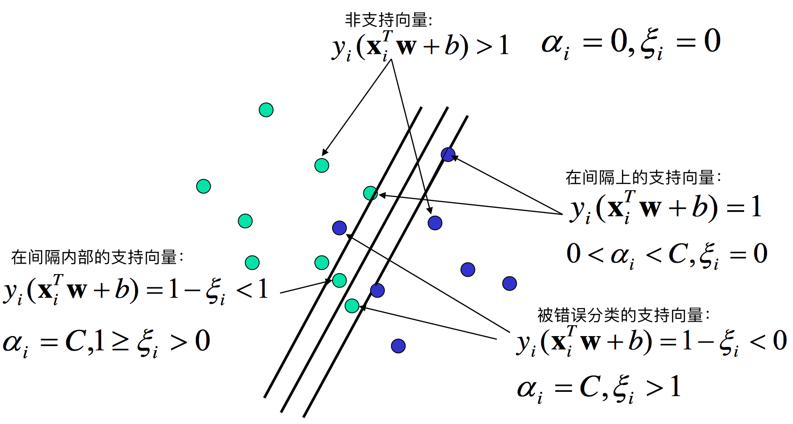因此，我们有与 2.4 节相同的结论，最优超平面只与支持向量有关而与非支持向量无关。
惩罚参数 C
对于不同惩罚参数 C，SVM 结果如下图所示。
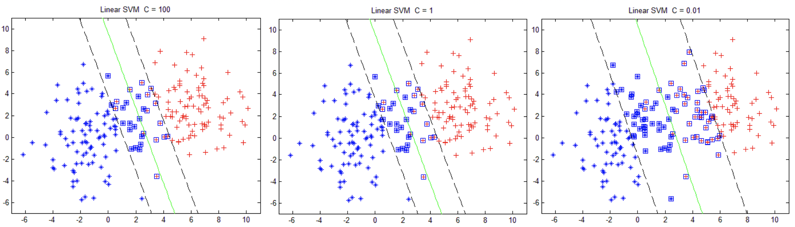再来看看我们的原始目标函数:
W,b,ξmin21∣∣W∣∣2+Ci=1∑nξi
对于更加一般化的问题，可将上述式子抽象成：
fminΩ(f)+Ci=1∑nl(f(xi),yi)(3.3.1)
前一项可以理解为 “结构风险 (structural risk)”，用来描述所求模型的某些性质 (SVM 就是要求间隔最大)；第二项称为 “经验风险 (empirical risk)”，用来描述模型与训练数据的契合程度 (即误差)。而参数C就是用于对二者的折中, 即我们一方面要求模型要满足某种性质另一方面又想使模型与训练数据很契合。
从正则化角度来讲， Ω(f) 称为正则化项，C 称为惩罚参数，C 越大即对误分类的惩罚越大 (要求模型对训练模型更契合)，这可能会存在过拟合；C 越小即相对更加看重正则化项，此时可能存在欠拟合。
支持向量机和逻辑回归的联系与区别
上面用的是hinge损失，不过我们也提到了还有其他一些替代损失函数，事实上，使用对率损失时，SVM得到的模型和LR是非常类似的。
支持向量机和逻辑回归的相同点：
- 都是线性分类器，模型求解出一个划分超平面；
- 两种方法都可以增加不同的正则化项；
- 通常来说性能相当。
支持向量机和逻辑回归的不同点：
LR使用对率损失，SVM一般用hinge损失；
在LR的模型求解过程中，每个训练样本都对划分超平面有影响，影响力随着与超平面的距离增大而减小，所以说LR的解受训练数据本身的分布影响；SVM的模型只与占训练数据少部分的支持向量有关，所以说，SVM不直接依赖数据分布，所得的划分超平面不受某一类点的影响；
如果数据类别不平衡比较严重，LR需要先做相应处理再训练，SVM则不用；
SVM依赖于数据表达的距离测度，需要先把数据标准化，LR则不用（但实际任务中可能会为了方便选择优化过程的初始值而进行标准化）。如果数据的距离测度不明确（特别是高维数据），那么最大间隔可能就变得没有意义；
LR的输出有概率意义，SVM的输出则没有；
LR可以直接用于多分类任务，SVM则需要进行扩展（但更常用one-vs-rest）；
LR使用的对率损失是光滑的单调递减函数，无法导出支持向量，解依赖于所有样本，因此预测开销较大；SVM使用的hinge损失有“零区域”，因此解具有稀疏性（书中没有具体说明这句话的意思，但按我的理解是解出的拉格朗日乘子 a 具有稀疏性，而不是权重向量 w），从而不需用到所有训练样本。
在实际运用中，LR更常用于大规模数据集，速度较快；SVM适用于规模小，维度高的数据集。
在 Andrew NG 的课里讲到过：
如果Feature的数量很大，跟样本数量差不多，这时候选用LR或者是Linear Kernel的SVM；
如果Feature的数量比较小，样本数量一般，不算大也不算小，选用SVM+Gaussian Kernel；
如果Feature的数量比较小，而样本数量很多，需要手工添加一些feature变成第一种情况。
正则化
事实上，无论使用何种损失函数，SVM的目标函数都可以描述为以下形式：
fminΩ(f)+Ci=1∑mℓ(f(xi),yi)(17)
在SVM中第一项用于描述划分超平面的“间隔”的大小，第二项用于描述在训练集上的误差。
更一般地，第一项称为结构风险（structural risk），用来描述模型的性质。第二项称为经验风险（empirical risk），用来描述模型与训练数据的契合程度。参数 C 用于权衡这两种风险。
前面学习的模型大多都是在最小化经验风险的基础上，再考虑结构风险（避免过拟合）。SVM却是从最小化结构风险来展开的。
从最小化经验风险的角度来看，Ω(f) 表述了我们希望得到具有何种性质的模型（例如复杂度较小的模型），为引入领域知识和用户意图提供了路径（比方说贝叶斯估计中的先验概率）。
另一方面，Ω(f) 还可以帮我们削减假设空间，从而降低模型过拟合的风险。从这个角度来看，可以称 Ω(f) 为正则化（regularization）项，C 为正则化常数。正则化可以看作一种罚函数法，即对不希望出现的结果施以惩罚，从而使优化过程趋向于期望的目标。
Lp 范数是常用的正则化项，其中 L2 范数 ∥w∥2 倾向于 w 的分量取值尽量稠密，即非零分量个数尽量多； L0 范数 ∥w∥0 和 L1 范数 ∥w∥1 则倾向于 w 的分量取值尽量稀疏，即非零分量个数尽量少。
非线性 SVM——核技巧
前面介绍的都是线性问题，但是我们经常会遇到非线性的问题 (例如异或问题)，此时就需要用到核技巧(kernel trick) 将线性支持向量机推广到非线性支持向量机。需要注意的是，不仅仅是 SVM，很多线性模型都可以用核技巧推广到非线性模型，例如核线性判别分析(KLDA)。
核函数
如下图所示，核技巧的基本思路分为两步:
- 使用一个变换将原空间的数据映射到新空间 (例如更高维甚至无穷维的空间)；
- 然后在新空间里用线性方法从训练数据中学习得到模型。

怎样映射到特征空间？
先来看看核函数的定义，
设 X 是输入空间 (欧式空间 Rn的子集或离散集合)，又设 H 是特征空间 (希尔伯特空间)，如果存在一个 X 到 H 的映射
ϕ(x):X→H
使得对所有 x,z∈X，函数 K(x,z) 满足条件
K(x,z)=ϕ(x)⋅ϕ(z)
则称 K(x,z) 为核函数， ϕ(x) 为映射函数，式中 ϕ(x)⋅ϕ(z) 为 ϕ(x) 和 ϕ(z) 的內积。
通常，直接计算 K(x,z) 比较容易而通过 ϕ(x) 和 ϕ(z) 计算 K(x,z) 并不容易。而幸运的是，在线性支持向量机的对偶问题中，无论是目标函数还是决策函数都只涉及到输入样本与样本之间的內积，因此我们不需要显式地定义映射 ϕ(x) 是什么而只需事先定义核函数 K(x,z) 即可。也就是说，在核函数 K(x,z) 给定的情况下，可以利用解线性问题的方法求解非线性问题的支持向量机，此过程是隐式地在特征空间中进行的。
正定核
由上面的介绍可知，我们只需要定义核函数就可以了。但是如何不通过映射 ϕ(x) 判断给定的一个函数 K(x,z) 是不是核函数呢？或者说，K(x,z) 需要满足什么条件才是一个核函数。
通常所说的核函数就是正定核函数，下面不加证明的给出正定核的充要条件，具体证明略显复杂，有兴趣的可以参考《统计学习方法》。
设 X⊂Rn ,K(x,z) 是定义在 X×X 上的对称函数，如果对任意的 xi∈X,i=1,2,…,m，K(x,z) 对应的 Gram 矩阵
K=[K(xi,xj)]m×m
是半正定矩阵，则 K(x,z) 是正定核。
虽然有了上述定义，但是实际应用时验证 K(x,z) 是否是正定核依然不容易，因此在实际问题中一般使用已有的核函数，下面给出一些常用的核函数。
多项式核函数 (polynomial kernel function)
K(x,z)=(x⋅z+1)p(4.2.1)
高斯核函数 (Guassian kernel function)
K(x,z)=exp(−2σ2∣∣x−z∣∣2)(4.2.2)
非线性支持向量机
如前 4.1、4.2 所述，利用核技巧可以很简单地把线性支持向量机扩展到非线性支持向量机，只需将线性支持向量机中的內积换成核函数即可。下面简述非线性支持向量机学习算法。
首先选取适当的核函数 K(x,z) 和适当的参数 C，构造最优化问题
αmin21i=1∑nj=1∑nαiαjyiyjK(Xi,Xj) − i=1∑nαis.t.i=1∑nαiyi=00≤αi≤C,i=1,2,…,n.(4.3.1)
再利用现成的二次规划问题求解算法或者 SMO 算法求得最优解 α^ 。
选择 α^ 的一个满足 0<α^j<C 的分量 α^j ，计算
b^=yj−i∈SV∑α^iyiK(Xj,Xi)(4.3.2)
构造决策函数：
f(x)=sign(i∈SV∑α^iyiK(Xj,Xi)+b^)(4.3.3)
此外，从其他博客摘录了一些（开始看不懂了
如何处理非线性划分
在现实任务中，我们更常遇到的是在原始样本空间中非线性可分的问题。对这样的问题，一种常用的思路是将样本从原始空间映射到一个更高维的特征空间，使得样本在该特征空间中线性可分。幸运的是，只要原始空间是有限维的（也即属性数目有限），那就必然存在一个高维特征空间使样本线性可分。
什么是核函数
在上面的例子中，我们是把每个样本对应的二维的特征向量 x 映射为一个三维的特征向量，假设我们用 ϕ(x) 来表示映射所得的特征向量。则在映射的高维特征空间中，用于划分的线性超平面可以表示为：
f(x)=wTϕ(x)+b
可以得到此时的目标函数为：
w,bmin21∥w∥2s.t.yi(wTϕ(x)+b)≥1,i=1,2,...,m(9)
对应的对偶问题为：
amaxi=1∑mai−21i=1∑mj=1∑maiajyiyjϕ(xi)Tϕ(xj)s.t.i=1∑maiyi=0,ai≥0,i=1,2,...,m(10)
注意到对偶问题中，涉及到 ϕ(xi)Tϕ(xj) 的计算，也即 xi 和 xj 映射到高维特征空间后的内积（比如 xi=(1,2,3)，xj=(4,5,6)，那么内积 xiTxj 就等于 1∗4+2∗5+3∗6=32），由于特征空间维数可能很高，所以直接计算映射后特征向量的内积是很困难的，如果映射后的特征空间是无限维，根本无法进行计算。
为了解决这样的问题，就引入了核函数（kernel function）。
打个比方，假设输入空间是二维的，每个样本点有两个属性 x 和 y，存在映射将每个样本点映射到三维空间：
ϕ(x)=ϕ(x,y)=(x2,2xy,y2)
给定原始空间中的两个样本点 v1=(x1,y1) 和 v2=(x2,y2)，则它们映射到高维特征空间后的内积可以写作：
ϕ(v1)Tϕ(v2)=<ϕ(v1),ϕ(v2)>=<(x12,2x1y1,y12),(x22,2x2y2,y22)>=x12x22+2x1x2y1y2+y12y22=(x1x2+y1y2)2=<v1,v2>2=κ(v1,v2)
可以看到在这个例子里，高维特征空间中两个点的内积，可以写成一个关于原始空间中两个点的函数 κ(⋅;⋅)，这就是核函数。
特别地，上面的例子中，映射用的是多项式核，多项式的次数 d 取2。
为什么需要核函数
这里的例子为了计算方便，映射的空间维数依然很低，这里稍微解释一下为什么需要核函数？假设原始空间是二维的，那么对于两个属性 x 和 y，取一阶二阶的组合只有5个（也即 x2，y2，x，y，xy）。但当原始空间是三维的时候，仍然取一阶二阶，组合就多达19个了（也即 x，y，z，xy，xz，yz，x2y，x2z，y2x，y2z，z2x，z2y，x2yz，xy2z，xyz2，x2y2z，x2yz2，xy2z2，xyz）。随着原始空间维数增长，新空间的维数是呈爆炸性上升的。何况现实中我们遇到的问题的原始空间往往本来就已经是高维的，如果再进行映射，新特征空间的维度是难以想象的。
然而有了核函数，我们就可以在原始空间中通过函数 κ(⋅;⋅) 计算（这称为核技巧（kernel trick）），而不必直接计算高维甚至无穷维特征空间中的内积。
使用核函数后，对偶问题式（10）可以重写为：
amaxi=1∑mai−21i=1∑mj=1∑maiajyiyjκ(xi;xj)s.t.i=1∑maiyi=0,ai≥0,i=1,2,...,m(11)
求解后得到的模型可以表示为：
f(x)=wTϕ(x)+b=i=1∑maiyiϕ(xi)Tϕ(x)+b=i=1∑maiyiκ(xi;x)+b
这条式子表明了模型最优解可通过训练样本的核函数展开，称为支持向量展式（support vector expansion）。
在需要对新样本进行预测时，我们无需把新样本映射到高维（甚至无限维）空间，而是可以利用保存下来的训练样本（支持向量）和核函数 κ 进行求解。
注意，核函数本身不等于映射！！！它只是一个与计算两个数据点映射到高维空间之后的内积等价的函数。
当我们发现数据在原始空间线性不可分时，会有把数据映射到高维空间来实现线性可分的想法，比方说引入原有属性的幂或者原有属性之间的乘积作为新的维度。假设我们把数据点都映射到了一个维数很高甚至无穷维的特征空间，而模型求解和预测的过程需要用到映射后两个数据点的内积，这时直接计算就没辙了。但我们又幸运地发现，原来高维空间中两点的内积在数值上等于原始空间通过某个核函数算出的函数值，无需先映射再求值，就很好地解决了计算的问题了。
核函数的性质
核函数定理：给定一个输入空间 X，函数 κ(⋅;⋅) 是定义在 X×X 上的对称函数。当且仅当对于任意数据集 D={x1,x2,...,xm}, 对应的核矩阵（kernel matrix）都是半正定的时候，κ 是核函数。
核矩阵是一个规模为 m×m 的函数矩阵，每个元素都是一个函数，比如第 i 行 j 列的元素是 κ(xi,xj)。也即是说，任何一个核函数都隐式地定义了一个称为“再生核希尔伯特空间（Reproducing Kernel Hilbert Space，简称RKHS）”的特征空间。
做映射的初衷是希望样本在新特征空间上线性可分，新特征空间的好坏直接决定了支持向量机的性能，但是我们并不知道怎样的核函数是合适的。一般来说有以下几种常用核函数：
| 名称 | 表达式 | 参数 |
|---|
| 线性核 | κ(xi,xj)=xiTxj | - |
| 多项式核 | κ(xi,xj)=(xiTxj)d | d≥1为多项式的次数，d=1时退化为线性核 |
| 高斯核（亦称RBF核） | κ(xi,xj)=exp(−2σ2∥xi−xj∥2) | σ>0 为高斯核的带宽（width） |
| 拉普拉斯核 | κ(xi,xj)=exp(−σ∥xi−xj∥) | σ>0 |
| Sigmoid核 | κ(xi,xj)=tanh(βxiTxj+θ) | tanh 为双曲正切函数，β>0,θ<0 |
特别地，文本数据一般用线性核，情况不明可尝试高斯核。
除了这些常用的核函数，要产生核函数还可以使用组合的方式：
若 κ1 和 κ2 都是核函数，则 aκ1+bκ2 也是核函数，其中 a>0,b>0。
若 κ1 和 κ2 都是核函数，则其直积 κ1⊗κ2(x,z)=κ1(x,z)κ2(x,z) 也是核函数。
若 κ1 是核函数，则对于任意函数 g(x)，κ(x,z)=g(x)κ1(x,z)g(z) 也是核函数。
支持向量回归
没讲，没看懂
同样是利用线性模型 f(x)=wTx+b来预测，回归问题希望预测值和真实值 y 尽可能相近，而不是像分类任务那样，旨在令不同类的预测值可以被划分开。
传统的回归模型计算损失时直接取真实值和预测值的差，支持向量回归（Support Vector Regression，简称SVR）则不然。SVR假设我们能容忍最多有 ϵ 的偏差，只有当真实值和预测值之间相差超出了 ϵ 时才计算损失。
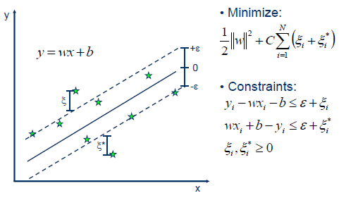如图所示，以SVR拟合出的直线为中心，两边各构建出一个宽度为 ϵ 的地带，落在这个宽度为 2ϵ 的间隔带内的点都被认为是预测正确的。
因此，问题可以形式化为目标函数：
w,bmin21∥w∥2+Ci=1∑mℓϵ(f(xi)−yi)(18)
其中 C 为正则化常数， ℓϵ 称为ϵ−不敏感损失（ϵ−insensitive loss）函数。定义如下：
ℓϵ(z)={{0,if ∣z∣≤ϵ;∣z∣−ϵ,otherwise.
引入松弛变量 ξi 和 ξ^i，分别表示间隔带两侧的松弛程度，它们可以设定为不同的值。此时，目标函数式（18）可以重写为：
w,bmin21∥w∥2+Ci=1∑m(ξi+ξ^i)(19)s.t. f(xi)−yi≤ϵ+ξi,yi−f(xi)≤ϵ+ξiξi≥0,ξ^i≥0,i=1,2,...,m.
注意这里有四组 m 个约束条件，所以对应地有四组拉格朗日乘子。
接下来就是用拉格朗日乘子法获得问题对应的拉格朗日函数，然后求偏导再代回拉格朗日函数，得到对偶问题。然后使用SMO算法求解拉格朗日乘子，最后得到模型，这里不一一详述了。
特别地，SVR中同样有支持向量的概念，解具有稀疏性，所以训练好模型后不需保留所有训练样本。此外，SVR同样可以通过引入核函数来获得拟合非线性分布数据的能力。
总结
SVM 优缺点
支持向量机的优点是:
- 由于 SVM 是一个凸优化问题，所以求得的解一定是全局最优而不是局部最优。
- 不仅适用于线性线性问题还适用于非线性问题 (用核技巧)。
- 拥有高维样本空间的数据也能用 SVM，这是因为数据集的复杂度只取决于支持向量而不是数据集的维度，这在某种意义上避免了 “维数灾难”。
- 理论基础比较完善 (例如神经网络就更像一个黑盒子)。
支持向量机的缺点是:
- 二次规划问题求解将涉及 m 阶矩阵的计算 (m 为样本的个数), 因此 SVM 不适用于超大数据集。(SMO 算法可以缓解这个问题)
- 只适用于二分类问题。(SVM 的推广 SVR 也适用于回归问题；可以通过多个 SVM 的组合来解决多分类问题)
SVM调参经验
SVM很适合做分类任务，但是如果刚开始接触SVM而不知道如何进行合理的参数选择的话可能得不到满意的结果。下面简介运用SVM的基本步骤，或者说调参经验。
主要参考:
Hsu C W, Chang C C, Lin C J. A practical guide to support vector classification[J]. 2003.
- 将原始数据转换为SVM算法期待的格式；
- 将数据进行scaling(很重要)；https://zhuanlan.zhihu.com/p/350656643
- 一般考虑用高斯核RBF(如果特征维度太高，建议直接用线性SVM)；
- 交叉验证寻找最优的RBF的参数以及参数 C ;
- 用上面找到的最优参数在整个训练集上训练；
参考
https://zhuanlan.zhihu.com/p/134089340
https://github.com/Vay-keen/Machine-learning-learning-notes
https://github.com/familyld/Machine_Learning
https://zhuanlan.zhihu.com/p/25994179
https://leovan.me/cn/2018/12/ensemble-learning/
https://easyai.tech/ai-definition/ensemble-learning/
https://zhuanlan.zhihu.com/p/72415675
https://www.zhihu.com/question/63492375
https://www.zhihu.com/question/27068705
https://www.zhihu.com/question/19725590/answer/241988854
https://tangshusen.me/2018/10/27/SVM/
https://www.joinquant.com/view/community/detail/a98b7021e7391c62f6369207242700b2
https://zhuanlan.zhihu.com/p/79531731
https://github.com/Charmve/PaperWeeklyAI/blob/master/03_Maiwei AI PaperWeekly/03_机器学习%26深度学习理论/机器学习算法之——K最近邻(k-Nearest Neighbor，KNN)分类算法原理讲解.md
https://blog.csdn.net/zc02051126/article/details/49618633
https://zhuanlan.zhihu.com/p/127022333
https://0809zheng.github.io/2020/03/30/ridge.html
https://www.cnblogs.com/wuliytTaotao/p/10837533.html
https://link.springer.com/referenceworkentry/10.1007/978-1-4899-7687-1_910#Sec13186
http://palm.seu.edu.cn/zhangml/files/mla11-mll.pdf
https://blog.csdn.net/zwqjoy/article/details/80431496
https://ryuchen.club/posts/0x000034/ (推荐）
https://zhuanlan.zhihu.com/p/78798251
https://zhuanlan.zhihu.com/p/622244758
https://www.biaodianfu.com/hierarchical-clustering.html
https://zhuanlan.zhihu.com/p/411533418
https://zhuanlan.zhihu.com/p/33196506
https://www.cnblogs.com/wry789/p/13125658.html
https://blog.csdn.net/qq_41485273/article/details/113178117
https://www.jianshu.com/p/7d4323c28716
http://lunarnai.cn/2019/01/02/watermelon-chap-13/
【周志华机器学习】十三、半监督学习
https://zhuanlan.zhihu.com/p/411533418
https://www.huaxiaozhuan.com/统计学习/chapters/12_semi_supervised.html
https://blog.csdn.net/tyh70537/article/details/80244490
https://zhuanlan.zhihu.com/p/37747650
7125messi.github.io
https://blog.csdn.net/qq_40722827/article/details/104515955
https://www.cnblogs.com/dyl222/p/11055756.html
https://www.zhihu.com/tardis/zm/art/392908965
https://blog.csdn.net/j123kaishichufa/article/details/7679682
https://www.cnblogs.com/heaad/archive/2011/01/02/1924088.html
https://www.cnblogs.com/stevenlk/p/6543628.html
baidinghub.github.io-PCA
baidinghub.github.io-LDA
等等